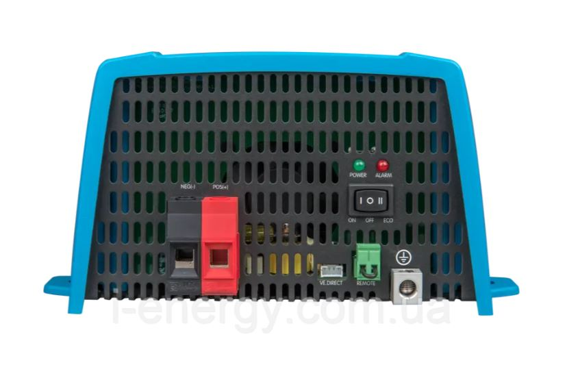
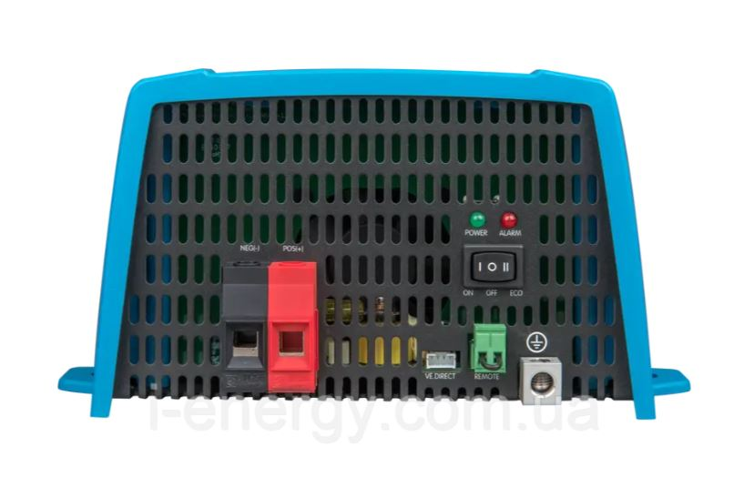
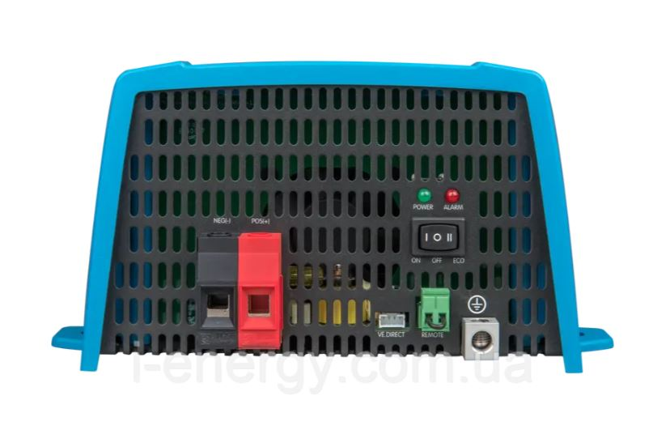
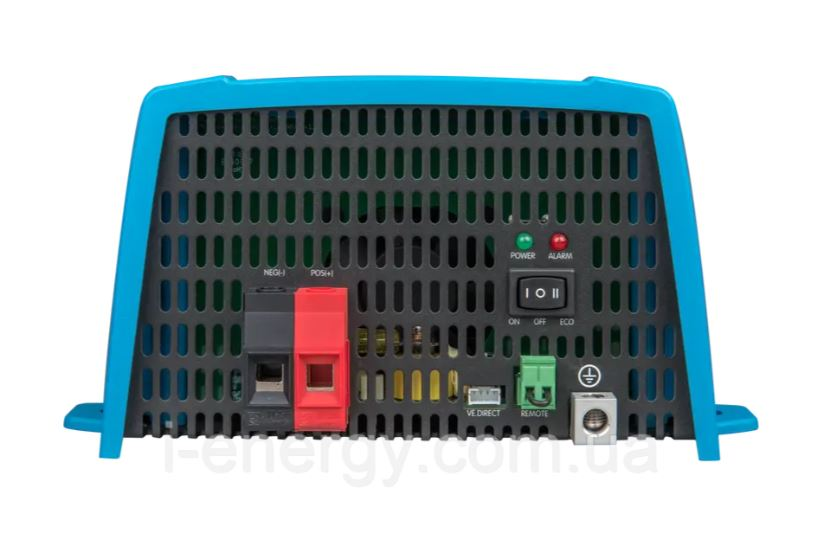

| Діапазон вхідної напруги | 19,2 - 17,0В |
| Вихідна напруга | Вихід 230 В AC ± 2% Частота : 50 Гц ± 0,1% |
| Пост. вихідна потужність при 25°C (ВА) (1) | 800 |
| Пост. вихідна потужність при 25°C (Вт) | 650 |
| Пост. вихідна потужність при 40°C (Вт) | 560 |
| Пікова потужність (Вт) | 1500 |
| Максимальна ефективність (%) | 90 |
| Потужність без навантаження (Вт) | 7 |
| Потужність при нульовому навантаженні за замовчуванням у режимі ECO (інтервал повтору за замовчуванням: 2,5 з, настроюється) | 1.5 |
| Відключення при низькому рівні постійного струму (регулюється) | 18.6 |
| Нижній поріг постійного струму для перезапуску та сигналізації (регулюється) | 21.8 |
| Визначення зарядженості батареї (регул.) | 28 |
| Налаштування запуску і зупинки в режимі економії | Регулюється |
| Захист (2) | a - f |
| Діапазон робочої температури | від -40 до + 65°C (активне охолодження) Зниження на 1,25% на 1°C вище 40°C |
| Вологість (без конденсації) | макс. 95% |
| Зовнішній перемикач | Так |
| Автоматичне включення резерву | Filax |
| Матеріал і колір | Сталевий корпус і пластикова кришка (синій Ral 5012) |
| Клас захисту | IP 21 |
| Максимальний перетин кабелю | 10мм2 / AWG8 |
| Вага (кг) | 5.5 |
| Розміри (В х Ш х Г в мм) | 105 x 216 x 305 |
| Безпека | EN-IEC 60335-1, IEC 62109-1 |
| Електромагнітна сумісність | EN 55014-1 / EN 55014-2 / IEC 61000-6 - 1 / IEC 61000-6 - 2 / IEC 61000-6-3 |
Інвертор Phoenix 12В 800ВА VE.Direct Schuko PIN121801200 Victron Energy це перетворювач напруги з чистою синусом на виході, з можливістю віддаленого моніторингу та управління, а також зміни налаштувань.
Інвертор ідеальний для використання в усіх транспортних засобах, що потребують бортового джерела змінного струму з напругою 230В, наприклад, машини швидкої допомоги, будинку на колесах, мобільного офісу, катери і яхти, а також для малопотужних сонячних електростанцій.
На базі інверторів Phoenix 12В 800ВА VE.Direct Schuko PIN121801200 Victron Energy можна побудувати систему резервного живлення, що працює за принципом подвійного перетворення. Для цього буде потрібно додаткове обладнання: акумуляторна батарея і зарядний пристрій.